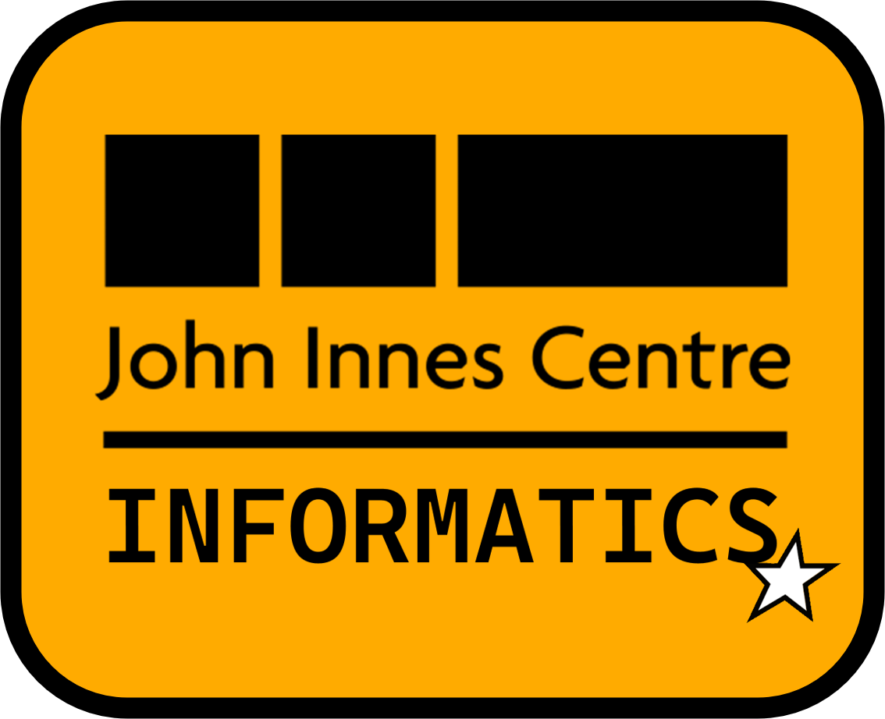

JIC Informatics
Data management, tools, training and help
Data management
Great Data ManagementVPN Storage use and stale data, by group and project → Data Management GuideVPN Storage, backups, sharing data and public archives → Data Management TrainingVPN Next session: 2 December — register on the intranet →Training
Training PillsVPN Short self-guided tutorials: Linux, git, Slurm and more → Training RepoVPN Exercises, slides and data from our workshops → JIC Training Hub JIC's courses for external scientists and the wider community → Wheat Training Resources for anyone starting to work on wheat →Other Informatics tools
Platform AdviceVPN Describe your work, get matched to the right JIC platform → Drone Imagery DataVPN Orthomosaics from drone flights over field trials → Events Registration for JIC events and courses → Cross ChargingVPN Internal recharge tracking for Informatics services → Web AnalyticsVPN Visits dashboard for JIC Informatics sites →Research databases — Gene expression
wheat-expression.com expVIP for wheat: expression across published RNA-seq data → rust-expression.com expVIP for the wheat rust fungi → bachberryexp.com expVIP for blackberry and raspberry fruit ripening → ORDER Oilseed rape expression during the floral transition → Seed ORDER Brassica expression during seed maturation → Wheat Spatial Spatial transcriptomics of the developing wheat inflorescence →Research databases — Sequences, genomes & markers
BLASTVPN BLAST against about 150 JIC databases → PolyMarker Homoeologue-specific SNP primers for polyploids → Crop Haplotypes Haplotype blocks across wheat pangenome cultivars → Brassica rapa TILLING Search the B. rapa TILLING population for mutations → RevGen UK Search for and order TILLING mutants → peapolloLogin Pea genome browser (JBrowse) → G4Atlas Database of RNA G-quadruplexes across species →Research databases — Other research tools
OMEROVPN Store, view and share microscopy images → MascotVPN Protein identification from mass spectrometry data → DEDALLogin Drone image processing and plot data, for UK academics and farmers → Aeciospore Dispersal Model How stem rust spores spread from barberry → ChronotopiaVPN Interactive exploration of time-series data → streptomyces.org.uk Genome database (StrepDB), strain collection and links → ActinoBase Community wiki of protocols for actinomycete bacteria → AntSpec Antirrhinum species, hybrid zones and genetics → Coen Lab software Software and models from the Coen lab →HPC services from Research Computing
Run by NBI Research Computing, not Informatics, but used constantly:
HPC Software CatalogueVPN Search HPC software versions and request new ones → Open OnDemandVPN The HPC in your browser: files, jobs, RStudio, Jupyter → Dropoff Sending and receiving files too big for email → git.nbi.ac.ukVPN NBI's GitLab, for code and pipelines →Get help
Email us informatics@jic.ac.uk → GitHub Our public projects and code →Drop-in sessions every Wednesday, 11:00–12:00, at the REC (Bioinformatics, Python Surgery, AI Clinic). In person: Informatics is on the second floor of Bateson.
Login JIC/SSO account needed, works from anywhere · VPN only works on the NBI network or VPN — verified against real public DNS, not guessed